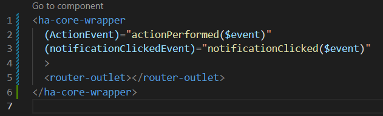
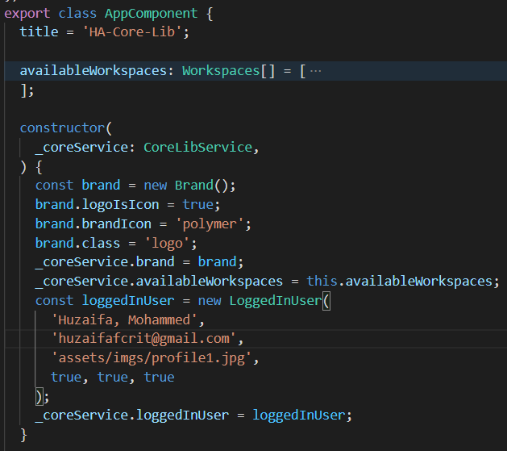

Developer
Description:
- Built on top of Angular material v12 and Bootstrap v5.
- Uses Google fonts material icons.
- A wrapper which houses a sidenav and header.
- Configurable sidenav list.
- Mobile Friendly.
- Application admin page path is: "/admin"
Configurable Properties:
SideNav
Header
Header Actions:
{{ item }},
No user header related actions recorded yet.
Installation and Setup
- Install package: npm i ha-core-lib
-
Add style sheet reference in styles.scss:
@import '@core-lib/assets/styles.scss'; - Import CoreLibModule in AppModule.
-
In App component.html use the selector as follow:
 -
In App component.ts import CoreLibService and provide inputs:
